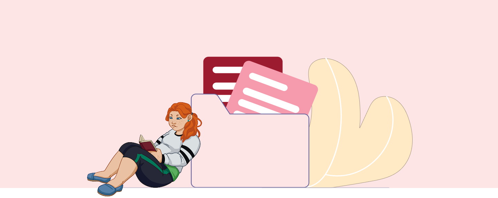
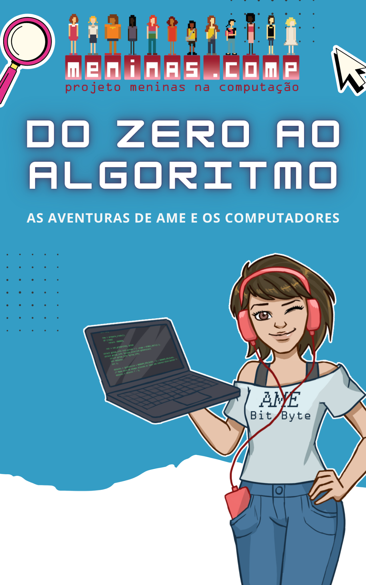
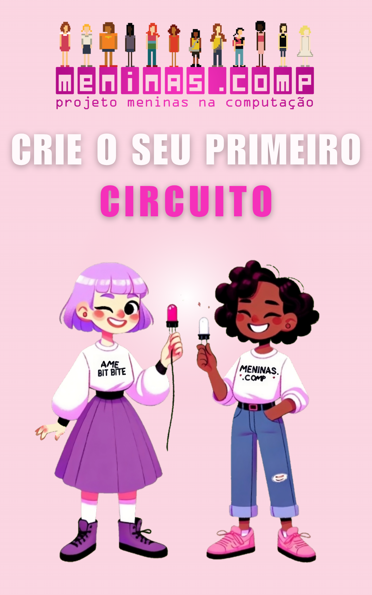
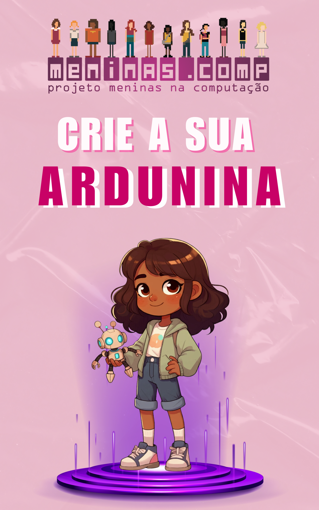
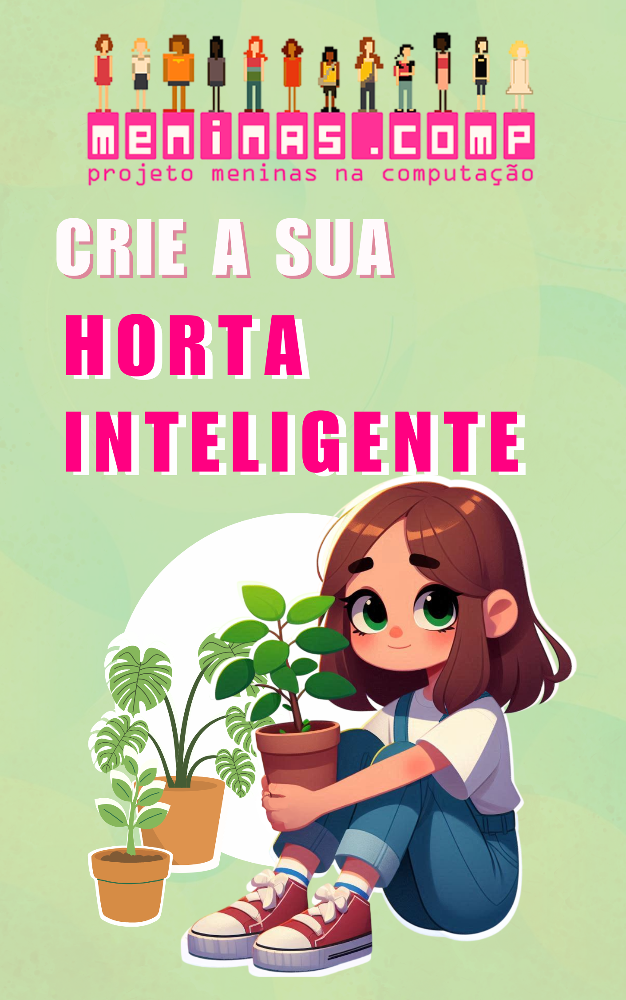

Apoio



Confira aqui as publicações de artigos e acompanhe as produções desenvolvidas pelo projeto. Aqui você encontrará informações sobre os trabalhos apresentados, temas abordados, eventos e periódicos em que foram publicados, além de detalhes sobre os autores e suas contribuições.
Araujo, A., Holanda, M., Koike, C., Oliveira, R., & Castanho, C.
In: Morales Morgado, E. (eds.), Interculturalidad, inclusión y equidad en educación, Salamanca: Ediciones Univesidad de Salamanca. https://doi.org/10.14201/0AQ0321115128
de Galés Silva, A., Prado, R. M., Moro, M. M., & Araujo, A.
In: Anais do XVII Women in Information Technology (pp. 91-102). SBC. (2023)
Souza, V., Holanda, M., Koike, C., & Araujo, A.
In: LAWCC - CLEI (2023)
Araujo A, A., Holanda, M., Castanho, C., Koike, C., Oliveira, R. B., Canedo, E., & Moro, M. M.
In: Anais do XVI Women in Information Technology (pp. 110-121). SBC
Araujo A, A., Briceño, A. J. L., Silvestre, A. S. S., Castro, B. P., Castanho, C. D., Koike, C., ... & Silva, T. P.
In: Journal on Interactive Systems, 13(1), 419-429.
Borges, A., Lima, A., Ketulhe, K., Araujo, A., & Holanda, M.
In: LAWCC/CLEI (pp. 77-87).
Holanda A, M., Júnior, A. L., da Silva, E. H. M., Laterza, J., Araujo, A., Castanho, C., ... & Oliveira, R. B.
In: Anais do XVI Women in Information Technology (pp. 145-156). SBC. (2022)
Holanda B, M., Klysnney, T., Araujo, A., Da Silva, D., Oliveira, R. B., Koike, C. C., ... & Fachini-Gomes, J. B.
In: 2022 IEEE Frontiers in Education Conference (FIE) (pp. 1-9). IEEE.
Holanda C, M., Lima, A., Borges, A., Rocha, K. K., Caldeira, M., Araujo, A. P., ... & Oliveira, R. B.
In: Clepsydra. Revista Internacional de Estudios de Género y Teoría Feminista, (23), 161-178. (2022)
Ketulhe, K., Holanda, M., Lima, A., Borges, A., Araujo, A., Castanho, C., ... & Oliveira, R. B.
In: Anais do XVI Women in Information Technology (pp. 1-11). SBC. (2022)
Borges, A., de Sousa, F., Holanda, M., Araujo, A. P., Koike, C. C., & Oliveira, R. B.
In: Anais do XV Women in Information Technology (pp. 161-169). SBC.
Briceno, A. J. L., Silvestre, A. S. S., Castro, B. P., Soares, H. E., Oliveira, T. A., Silva, T. P., ... & Oliveira, R. B.
In: Anais do XV Women in Information Technology (pp. 121-130). SBC
Holanda, M., & Da Silva, D.
In: IEEE Transactions on Education, 65(3), 356-372.
HolandaA, M., Lima, A., Borges, A., Ketulhe, K., Koike, C., Oliveira, R. B., & Araújo, A. P.
In: Latin American Women in Computing Conference (LAWCC).
Holanda B, M., Araujo, A., Da Silva, D., von Borries, G., Oliveira, R. B., Koike, C. C., & Castanho, C. D.
In: Latin American Women in Computing Conference (LAWCC).
Lima, A., Santos, M. E., Zhou, T., Holanda, M., Araujo, A. P., Koike, C. C., ... & Oliveira, R. B.
In: Anais do XV Women in Information Technology (pp. 220-229). SBC.
Holanda, Maristela; Mourao, Roberto N. ; Von Borries, George ; Ramos, Guilherme N. ; Araujo, Aleteia ; Walter, Maria Emilia
In: 2020 IEEE Frontiers in Education Conference (FIE), 2020, Uppsala. 2020 IEEE Frontiers in Education Conference (FIE), 2020.
HOLANDA, M; LIMA, A. ; BORGES, A. ; KETULHE, K. ; ARAUJO, A. ; KOIKE, C
In: Latin American Women in Computing Conference (LAWCC), 2020, Ecuador. Latin American Women in Computing Conference (LAWCC).
NUNES, THAYANNA KLYSNNEY MOREIRA ; ARAUJO, ALETEIA PATRICIA ; Holanda, Maristela
In: Women in Information Technology, 2020, Brasil. Anais do Women in Information Technology (WIT 2020). p. 244.
HolandaD, M., von Borries, G., Da Silva, D., Dorea, C., Oliveira, R. B., & Ishikawa, E.
In: 2020 IEEE Frontiers in Education Conference (FIE) (pp. 1-8). IEEE
HolandaB, M., Araujo, A. P., & Walter, M. E.
In: 2020 Research on Equity and Sustained Participation in Engineering, Computing, and Technology (RESPECT) (Vol. 1, pp. 1-2). IEEE.
Holanda, M., & Da Silva, D.
In: Proceedings of the 51st ACM Technical Symposium on Computer Science Education (pp. 1316-1316).
HOLANDA, Maristela; ARAUJO, Aleteia
In: WOMEN IN INFORMATION TECHNOLOGY (WIT), 13. , 2019, Belém. Anais do XIII Women in Information Technology. Porto Alegre: Sociedade Brasileira de Computação, july 2019 . p. 169-173.
Hansen, L., Borges, V., Araujo, A., & Holanda, M.
CLEI 2019, 42-50.
HANSEN, Luiza et al.
Brazilian Symposium on Computers in Education (Simpósio Brasileiro de Informática na Educação - SBIE), [S.l.], p. 1751, nov. 2019. ISSN 2316-6533.
Maristela Holanda, Roberto Mourão, Maria Emilia Walter, Aleteia Araujo, Maria Emilia Walter, Vinicius Borges, Guilherme Ramos, George Borries.
CLEI journal. Vol 22 N. 2 (2019): Special Issue on Women in Computing in Latin America.
SOARES, C. N. ; LEITE, L. L. ; Aleteia Patricia Araujo ; HOLANDA, M
In: 12º Women in Information Technology (WIT 2018), 2018, Natal. 12º Women in Information Technology (WIT 2018), 2018. v. 12. p. 1
HANSEN, L. A. ; CHAGAS, L. M. ; Aleteia Patricia Araujo ; BORGES, VINICIUS; DE HOLANDA, MARISTELA .
In: 12º WOMEN IN INFORMATION TECHNOLOGY (WIT 2018), 2018, Natal. 12º WOMEN IN INFORMATION TECHNOLOGY (WIT 2018), 2018. v. 12. p. 1-6.
Maristela, Holanda; ARAUJO, A. ; Maria Emilia M. T. Walter ; OLIVEIRA, C. A. J. ; SUERTEGARAY, A.
In: Congresso da Mulher Latino-americana em Computação, 2018, São Paulo. XLIV CLEI Conferência Latino-Americana de Informática, 2018. v. 1. p. 1-9
Maristela, Holanda; MORAO, R. ; RAMOS, G. N. ; Aleteia Patricia Araujo ; Maria Emilia M. T. Walter
In: 11º WIT - Women in Information Technology, 2017, São Paulo. XXXVII Congresso da Sociedade Brasileira de Computação, 2017. p. 1162-1166.
Maristela, Holanda; DANTAS, M. ; COUTO, G. ; MENDONCA, J. ; Aleteia Patricia Araujo ; Maria Emilia M. T. Walter
In: 11º WIT - Women in Information Technology, 2017, São Paulo. XXXVII Congresso da Sociedade Brasileira de Computação, 2017. p. 1208-1212.
Maristela, Holanda; Ramos, G. N. ; Morão, R. ; Aleteia Patricia Araujo ; Maria Emilia M. T. Walter
In: LAWCC, IX Congreso de la Mujer Latinoamericana en la Computacion, 2017, Cordoba, Argentina. LAWCC
Holanda, Maristela; Aleteia Patricia Araujo; Maria Emilia M. T. Walter
In: 10º WIT Women in Information Technology, 2016, Porto Alegre. Congresso da Sociedade Brasileira da Computação, 2016.
Holanda, Maristela; Aleteia Patricia Araujo; Maria Emilia M. T. Walter
Participação, v. 29, p. 9-19, 2016.
Moro, M. M., Araujo, A. P. F. ; et al.
In: BIA BARBOSA, LAURA TRESCA, TANARA LAUSCHNER. (Org.). 3ª Coletânea de Artigos - TIC, Governança da Internet, Gênero, Raça e Diversidade - Tendências e Desafios. 1ed.: CGI.BR, 2023, v. 1, p. 369-404.

Uma menina curiosa chamada Ame embarca em uma jornada pelo universo da Computação ao lado de amigos especialistas. Juntos, exploram algoritmos, computadores e a história da tecnologia de forma divertida e acessível. O livro convida o leitor a aprender, se encantar e descobrir como a curiosidade pode transformar o mundo.
Ler mais →
O livro ensina, de forma prática e acessível, como montar um circuito elétrico e programá-lo com Arduino. Apresenta conceitos fundamentais como tensão, corrente e resistência, além do funcionamento do LED. Também orienta o uso da Arduino IDE e conta com um vídeo explicativo para complementar o aprendizado.
Ler mais →
O livro apresenta o funcionamento de componentes como servomotor, buzzer e LED. Também ensina a utilizar a Arduino IDE para programar e controlar os circuitos. É um guia prático e acessível para aprender eletrônica de forma divertida.
Ler mais →
O livro explora o uso de sensores de umidade, relés, bombinhas de água e fontes externas de energia. Também ensina a utilizar a Arduino IDE para programar e controlar os circuitos. É um material prático e didático, pensado para tornar o aprendizado mais divertido e proveitoso.
Ler mais →